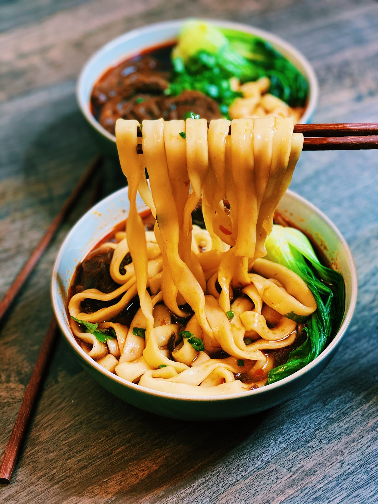

Beef NoodleSoup

Beef NoodleSoup Description
Beef NoodleSoup is my mother's signature dish! I am always happy whenever we have beef noodle soup.
It is really comforting and hearty, and I hope it is my last meal.
Ingredients
- Beef
- Fresh Noodles
- Green Onions
- Soy Sauce
- Onions
- Sesame Oil
- Carrots
- Tomatoes
Steps
- Brown the meat over the stove.
- Add onion and carrots, saute.
- Pour in soy sauce and half a liter of water.
- Boil.
- Prepare noodles.
- Sprinkle green onions and drizzle sesame oil over the finished bowl.